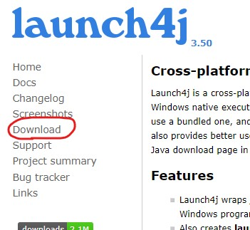
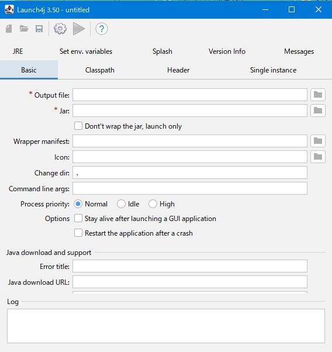
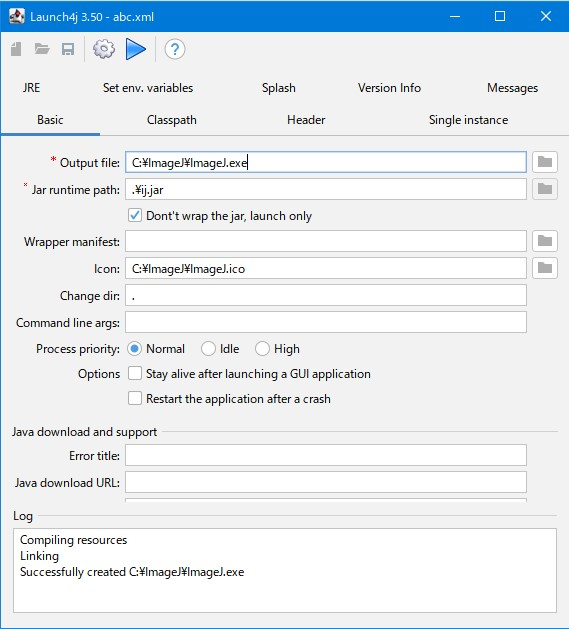

4th August 2024 at 2:40pm
ImageJの実行可能な「ij.jar」は、「ImageJ.exe」から実行することが可能です。（Windows版）
ただし、Javaのバージョンによっては実行できません。多分、実行するJavaのバージョンを指定しているのだと思います。
「Launch4j」を使って任意のJavaのバージョンで実行できる「ImageJ.exe」を作成します。
まず、Download先の「launch4j-3.50-win32.exe」をダウンロードし、実行しインストールします。

スタートメニューから「Launch4j」を起動します。

環境変数「JAVA_HOME」を設定しておいてください。
jarを実行するだけのexeだけなので、設定は簡単です。
- Output file
- ・作成するexeファイルの名前を入力します
- ・ImageJ.exeにする場合は、元のファイルを変名しておくと良いと思います。
- jar / Jar runtime path
- ・「ij.jar」を「.\ij.jar」のような相対パスで入力します
- Dont't wrap the jar, launch only
- ・チェックをONにする
- Icon
- ・アイコンファイルの準備がある時はここに入力します

[Build wrapper]ボタン（歯車マーク）を押して設定ファイルを保存すると、exeが作成されます。
「Output file」「jar / Jar runtime path」を設定しないと、[Build wrapper]ボタンは押せません。
設定ファイルを保存し一度はビルドできないと、[Test wrapper]ボタンはアクティブになりません。
本記事で作成した設定ファイルを こちらに置いておきます。（フォルダは、 C:\ImageJ になっていますので適切なフォルダに変更してください）
あと、「Test wrapper」で作成したexeの動作確認ができます。